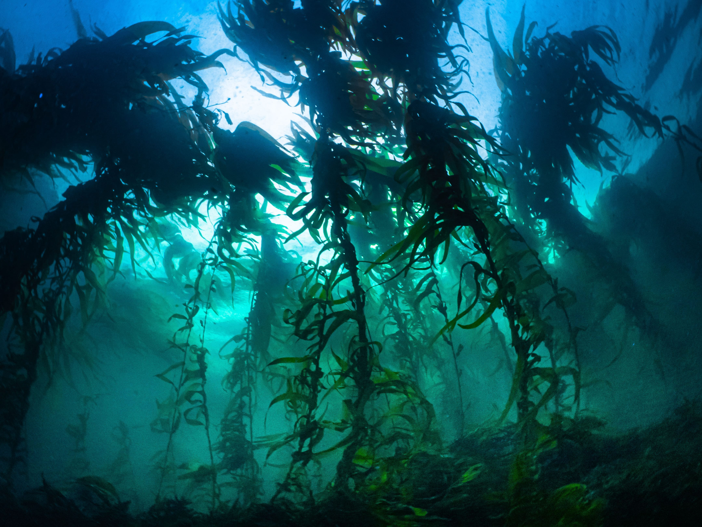
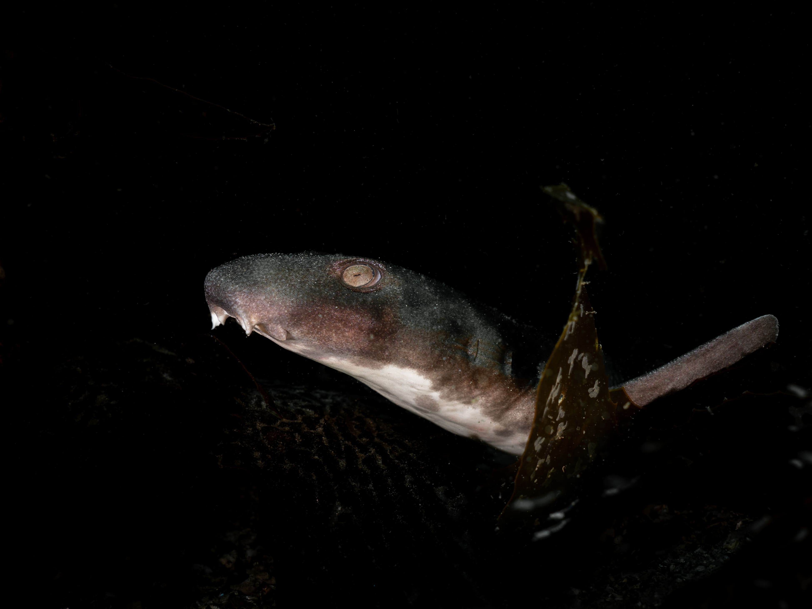

Wild cards
On this page you can learn more about the science behind all the wildcards included in the game. You can find the science behind all the event cards here.
We are constantly updating this page, so please visit regularly for new information. If you think we are missing some important information or important events or cards, please contact us!
Mel finds a weedy seadragon while diving at one of the Reef Life Survey sites.
Blue Groper
Blue Gropers can be an ecologically important species that help prevent the creation of urchin barrens that occur due to the presence of the Long-spine sea urchin. Whilst they may do little to reverse barren areas their presence as a predator of grazing urchins helps prevent the creation of barrens. They have also been shown to keep marine habitats balanced through predation of other marine invertebrates.
{kind=link}
Learn more
Check out these resources to learn more:
- An overview of the Blue Groper by the Australian Marine Conservation Society
- A review by IMAS on the potential to translocate Blue Groper for conservation
Catch or release
Releasing caught fish, either because they are unwanted or for ocean health (i.e. releasing large breeding females) can reduce the impact of recreational fishing on fish stocks, thus leaving more fish for the future in a healthy ocean. Survival rates of fish featured in the game (such as Yellowtail Kingfish) can be above 85% when released correctly, while flathead survival rates can be about 95%.
Releasing caught fish can greatly help fish populations. If minimum or maximum size limits are in place, fish too small or too large must be safely released. Anglers also often chose to release unwanted fish or fish that are especially valuable for the ocean and fish populations, such as predatory or large fish. In fact, all fish are valuable in the sea! All fish that will not be consumed should be released back into the ocean safely. When released correctly, survival rates are very high - often over 90%.

How to play
Choose a fish from the available face-up cards in the centre area of the game and either place it in your esky or release it into your fishing spot. The size of the fish will be mentioned on the card, and different cards will have different sizes of fish to be released or caught. Remember this card is discarded after use.
This card shows the importance of releasing fish back into the water when caught, and demonstrates how everyday fishing actions can help ensure there are enough fish into the future.
Learn more
- You can learn about catch and release fishing from some of Australia’s great angler organisations, such as OzFish and VRFish
- Here is a great site with information on catch and release survival rates for different NSW fish species
- “Keep Fish Wet” is a great organisation in the USA, working with anglers to increase survival in catch and release fishing. They have three main rules to ensure released fish have good chances to survive.
- The US National Parks Service and NOAA both have some great tips on how to make sure released fish will survive.
Learn how to release fish safely in this video with Steve Starling.
Citizen science
The collection of data is key to many animal and marine life studies. Conducting large analyses is important to get more accurate information and knowledge, but collecting large amounts of data can be difficult, time consuming and expensive. In the last decade, science and data collection have undergone a true revolution through citizen science. By creating ways for everyone to get involved and have input into a science project, the knowledge gained and the positive outcomes from research can be greatly amplified and shared with the wider community.
The citizen science project Redmap featured on the card stands for Range Extending Database. The research from Redmap involves the collection of marine animal observations from all over Australia and examines how animals are extending their ranges due to warming oceans and changing climates.
{kind=link}
By getting everyone involved in a science project the science is often more rigorous, accurate and concise and thus can produce better outcomes.
Learn more
Check out this article from UNEP on the benefits and rise of citizen science. There are plenty of citizen science initiatives that everyone can get involved in. Here are some examples:
- Redmap
- iNaturalist
- Oceanwatch Australia
- Reef Life Survey
- Tassie Fish Frame Collection Program
- Citizen science projects at IMAS in Tasmania, Australia
A citizen scientist helping with underwater surveys in the Reef Life Survey program.
Centre for Marine Socioecology (CMS)
The Centre for Marine Socioecology (CMS) provides, develops and integrates multidisciplinary research to better understand and manage Australia’s oceans. They do this by connecting, cooperating and collaborating across multiple organisations and different research disciplines. Their members range from marine scientists to philosophers, artists, economists and more.
Collaboration across multiple fields is an extremely important aspect of research but is often difficult to achieve. The CMS card in Big Fish aims to highlight how working together in areas such as research produces many wide-reaching benefits.
{kind=link}
How to play
Draw two cards from the face-down card pile and put them in your hand. Then choose another player to draw one card from the face-down card pile that they may keep in their hand. Remember this card is discarded after use.
Learn more
- Why do we need to collaborate? Read more about it here.
- Check out some of the amazing CMS initiatives, such as Curious Climate Schools, where all schools can join in to ask experts questions about climate change.
- See also this Future Seas 2030 initiative, where a large group of researchers aimed to envision two alternative ocean futures for 2030. We can have a Business as usual or Sustainable and collaborative future. Which one do we chose? Don’t forget to watch this fun thriller Full metal aquatic on how the two futures might play out.
- You can also read this mini-review article about art-science collaborations and the ocean
These are the research themes of the Centre for Marine Socioecology. Check out their website to learn more about the initiatives that support these themes.
Delicious bait
It’s important when collecting bait for recreational fishing activities to think about the potential impact bait collection has. Some bait collection activities that occur in excess can lead to a decline in bait presence as well as negatively impacting shore bird species. Often the collection process can be the primary cause of population declines. Examples include removing boulders or rocks in search of bait crabs.
{kind=link}
How to play
Place into your fishing spot to catch an additional fish each turn. If you do, discard a juvenile fish.
Learn more
Many baits can be collected sustainably especially if care is taken to prevent damage to the habitat the bait is collected from. Often there will be local rules and limits of bait collection just like recreational fishing bag limits. It is important that local rules are obeyed and consulted to ensure sustainable bait and thus a healthy and productive marine ecosystem.
Fishing kayak
Fishing kayaks and canoes have been used by indigenous peoples of Australia and the world for many thousands of years. They can in many different forms, from hollowed out trees, to woven boats and those lined with animal hides.
{kind=link}
Learn more
Fishing and kayak/canoes have a rich intertwined history.
- Check out this page for a chronology of kayak use in indigenous cultures in Eastern Australia
- This museum also has a large collection of Australian indigenous watercraft
- Kayaks and canoes aren’t only historically and culturally important in Australia, and the Smithsonian has some great information on historical uses of small watercraft in other countries
Fishing rod
As fishing technology advances, fish become easier to catch. This results in increased catches and can put extra pressure on recreational fish species. It is therefore important to consider new technologies when assessing fish stocks.
{kind=link}
Learn more
- This report details the impact of fishing rod technological advancements on the Australian snapper industry
- This article looks at how advances in all gear types have affected a small Chilean fishery
Giant kelp
Giant Kelp provides a huge, complex, and food-filled habitat which is essential for healthy oceans and healthy fish populations. Giant kelp forests produce much greater amounts of food for particularly important species of fish and invertebrate than other types of kelp forest, and those species feed back into the larger marine ecosystem.
However, giant kelp forests around Australia have been declining drastically for decades, mostly due to climate change. This is a huge loss of natural underwater “forests” that remains unknown by the general public. Many scientists and organisations are working to restore these kelp forests.

How to play
If you have a Giant Kelp card in your fishing spot you may grow two larval fish into juvenile fish each turn. The rule of one grow per fish per turn still applies.
This card shows how much energy and habitat a patch of giant kelp can provide to the fish in a fishing spot. This card is also present in the game to draw attention to giant kelp decline and restoration efforts in Tasmania.
Learn more
Check out these videos about giant kelp!
Kelp is extremely important in providing habitats for all marine creatures, and there are currently many restoration efforts in progress.
- Read this Guardian article about kelp forest loss and restoration,
- Learn about giant kelp restoration efforts by IMAS, OzFish and The Nature Conservancy
- Read a scientific article about reasons for kelp decline and restoration efforts.

Healthy giant kelp forests are essential to ocean health, and they’re extremely beautiful.
Heat wave
Marine Heatwaves play havoc on Tasmanian marine ecosystems. They do this by changing the population structure of many species. This change can result in food sources such as plankton moving further south, which in turn can alter the foodweb.
{kind=link}
How to play
Choose a player, they must discard two non-big fish from their fishing spot.
Learn more
Altered food webs can often result in poor reproduction amongst fish, habitat loss due to invasive species and many more negative consequences. It is these lesser easily observed consequences that can lead to serious declines in the populations of recreationally fish marine species.
- Check out this Marine Heatwaves in the Tasman Sea factsheet
- This article details the effects of heatwaves on marine food webs
- Tasmania’s fisheries are being affected by heatwaves in 2024
Humpback whale
Great whales such as the humpback whale and blue whale are key species in helping to cycle nutrients throughout the ocean. Known as whale pumps, these animals help by pooping out large quantities of nutrients that are essential for smaller species such as phytoplankton to grow. For example, whales feed in deep waters but breathe at the surface, so they bring the nutrients to the surface when they poop.
{kind=link}
This card is designed to showcase how a visiting large predator like a whale can provide positive impacts on a local environment. Whilst they may consume fish for food, they also supply vital nutrients that are required for a healthy marine habitat and fishing spot. This is why the card is discarded and why a smaller fish must be discarded to help a larger fish - while you may lose fish to whale feeding, you ultimately end up with more fish in the long run when whales are abundant in the ocean.
Learn more
- Here’s a scientific article explaining the benefits of the “whale pump”.
- You can also check out this story about the investigation of the whale nutrient pump.
- This popular article is all about great whales, the threats against them and actions that can be taken to prevent those threats (with a focus on Canada).
A humpback whale calf breathes at the surface. The fish gathered around it are hoping it will drop some of its next meal so they can scavenge.
Illegal fishing
Illegal fishing means fishing that does not follow existing regulations, be they minimum or maximum size limits, bag limits, marine protected areas or other rules. Fishing regulations are essential for sustainable fishing, but in various countries up to 20% of anglers may not obey these rules. This card shows catching fish below or above the determined size limit hurts the population and the fishing, although the damage will naturally depend on how large the overall population is in the fishing spot.
Through discarding a card, players can start to understand the overall negative effects of illegal fishing. Fishing rules and regulations are there to protect fish stocks and prevent depletion and over fishing. Not obeying these limits means a less productive and functional marine ecosystem.

How to play
Choose a player, they must choose a juvenile fish in their fishing spot and discard it. Remember this card is discarded after use.
Learn more
- Fishwatch allows you to report illegal fishing in Tasmania.
- A scientific article about illegal fishing (not recreational) and societal well-being.

Fisheries management makes sure that future generations will always be able to catch important species like Southern Rock Lobster (left), flathead (middle), and leatherjacket (right).
Large shark
The large shark card is present in BigFish to help show the value of apex predators in an ecosystem. Often, large predators are demonised by recreational fishers who mistakenly believe that they are actively predating on fish that could otherwise be caught. In fact, many sharks are primarily scavengers which feed upon sick and old fish, not those usually targeted during recreational fishing. Without large sharks, other food chains will be affected and the ocean can become out of balance.
Sharks also keep species that predate on other important pieces of an ocean ecosystem in check. For example, many of a shark’s prey species eat seaweed, and without sharks to keep the fish population in check seaweed can become scarce. Seaweed is incredibly important in providing some species of juvenile fish with places to hide and live while in a small and vulnerable stage of life.
{kind=link}
Learn more
Sharks contribute so much more to ecosystems than many people realise. Check out these resources to learn more.
- “Why oceans need sharks”, an article by the Australian Museum
- Oceans Research News answers the question: “Why do We Need Sharks for Our Ecosystem?”
- The Importance of Sharks from Oceana
A swell shark in a rocky reef.

Marine protected area
Marine protected areas (MPAs) are an important tool for habitat and species conservation. While they are not a standalone solution, they can be used to ensure species and ecosystems survive into the future.
One way marine protected areas benefit recreational fishers is that fish from the protected area can “spill over” into neighbouring areas. This works because the breeding stock of large individuals in the marine protected area are safe from fishing and will produce offspring to repopulate fishing spots. Without these protected areas, the big fish will lose protection and have the potential to be caught, so they won’t produce as many offspring for the future.
There are many other benefits to marine protected areas and while they need to be used in conjunction with planning and research they are still an important asset to recreational fishers.
{kind=link}
How to play
This card is used during the draw phase of your turn. Before drawing any cards have a look to see if any fish present in the face-up area match those present in an opponent’s fishing spot. If there are any matches then you may take that fish card into your hand in addition to any other cards drawn during the draw step.
Learn more
- This report from Australian Department of Climate Change, Energy, the Environment and Water details the many benefits of Marine Protected Areas
- The Importance of Marine Protected Areas (MPAs), an article by National Geographic
- How Marine Protected Areas Help Fisheries and Ocean Ecosystems
- 5 Benefits of Marine Protected Areas (MPAs)
- This Nature article and - this Frontiers in Marine Science article both investigate the benefits of MPAs for the environment and local communities
Marine protected areas are often diverse havens for fish of all sizes.

Poor water quality
Poor water quality affects many parts of a marine ecosystem in many different ways. This card aims to show a more general effect, and not highlight a single source of poor water quality. Examples of the sources of poor water quality include excessive runoff from farming and stormwater which may contain excessive sediments or nutrients. Both of these contaminants can prevent photosynthesis both directly and indirectly, and so can damage seaweed reefs and seagrass beds.
{kind=link}
Learn more
- This scientific consensus statement from 2013 outlines many of the major sources and impacts of poor water quality on the Great Barrier Reef
- Check out this EPA article about the effects of Dead Zones and Harmful Algal Blooms
Kelp and other seaweeds are particularly affected by poor water quality, because they depend on sunlight to grow.
SCUBA equipment
SCUBA diving collection can be a great way to selectively target certain fishable species. This often results in less bycatch and habitat destruction. However, some species are very easily collected and SCUBA diving whilst fishing can result in severe stock damage. It is therefore important to use SCUBA gear responsibly and obey the rules of which species can and cannot be caught on SCUBA.
{kind=link}
Learn more
- Check out this report on SCUBA fishing in Hawai’i
- NSW banned the use of SCUBA gear for spearfishing in 1969 - see here
Seaweed
Seaweeds create important habitats for many fish species. Inside seaweed reefs fish forage for food and seek refuge from predators. Without these reefs many small and juvenile fish will not survive. A lack of seaweed also alters the balance between herbivorous and carnivorous fish that can further degrade a marine ecosystem.
{kind=link}
How to play
Having a seaweed wild card in your fishing spot allows you to grow an additional fish each turn. However, the limits of one grow per fish per turn still applies.
Learn more
- Check out this article about recent seaweed restoration efforts by UNSW
- The Great Sourthern Reef restoration project
- Sea Trees is a non-profit which funds coastal conservation projects, including seaweed restoration
- Scaling up Kelp Forest Restoration in Portugal
A cat shark seeks refuge in a kelp bed.

Severe weather
Big fish can survive extreme weather events better than smaller fish of the same species. Therefore, the science shows that a population of fish is more at risk of decline and slower population recovery when larger individuals of that species are not present. This card highlights how a changing climate and more extreme weather events mean that fishing spots with larger fish of a species present are in a much better position to recover to prevent health levels than those lacking larger fish.
{kind=link}
How to play
Whoever plays this card gets to select a player who must then discard two larval, juvenile, or medium fish of their choice from their fishing spot. Fish cards in the player’s hand may not be used when discarding fish. Remember to discard after use.
Learn more
- Check out this article to learn why targeting big fish is making populations less resilient and less likely to continue into the future
- This article details how climate change is contributing to reduced fisheries production, but this article shows how having a size diversity in a fish population can help buffer it against the negative effects of a changing climate
Reefs and everything living there are affected by high winds and large swells.

Shellfish reef
Shellfish reefs provide many important ecosystem services and improve the general health of marine environments. They are particularly good at providing the complex habitat that is important to the development of larval and juvenile fish. By providing places for the fish to hide and feed, they help increase the recruitment and survival of many fish species. They also benefit the ecosystem through processes like water filtering, overall increasing ecosystem health and thus fish stock levels.
{kind=link}
How to play
Place the shellfish reef into your fishing spot, and on the spawn phase of every subsequent turn you may take a fish from the face-up cards and place it in your fishing spot as a larval fish.
Learn more
- This article all about how oyster reefs impact fish populations
- Restoring shellfish reefs: Global guidelines for practitioners and scientists
- Check out these articles from the Nature Conservancy about life on an oyster reef, and their projects restoring shellfish reefs